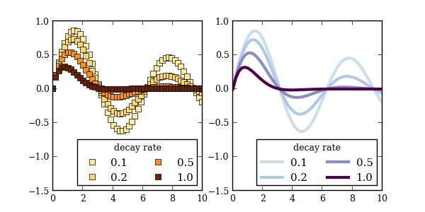

Suppose you want to plot a series of curves, and each curve describes a response to different values of a parameter. color_mapper returns a function that maps a parameter value to an RGBA color in a color map.
Python source code: plot_color_mapper.py (generated using mpltools 0.1dev)
import matplotlib.pyplot as plt
from mpltools import layout
from mpltools import color
pvalues = np.logspace(-1, 0, 4)
parameter_range = (pvalues[0], pvalues[-1])
# Pass parameter range so that color mapper knows how to normalize the data.
map_color1 = color.color_mapper(parameter_range)
map_color2 = color.color_mapper(parameter_range, cmap='BuPu', start=0.2)
figsize = layout.figaspect(aspect_ratio=0.5)
fig, (ax1, ax2) = plt.subplots(ncols=2, figsize=figsize)
x = np.linspace(0, 10)
for pval in pvalues:
y = np.sin(x) * np.exp(-pval * x)
ax1.plot(x, y, 's', color=map_color1(pval))
ax2.plot(x, y, lw=3, color=map_color2(pval))
for ax in (ax1, ax2):
leg = ax.legend(['%0.1f' % v for v in pvalues], loc='lower right', ncol=2)
leg.set_title('decay rate')
ax.set_ylim(-1.5, 1)
plt.show()